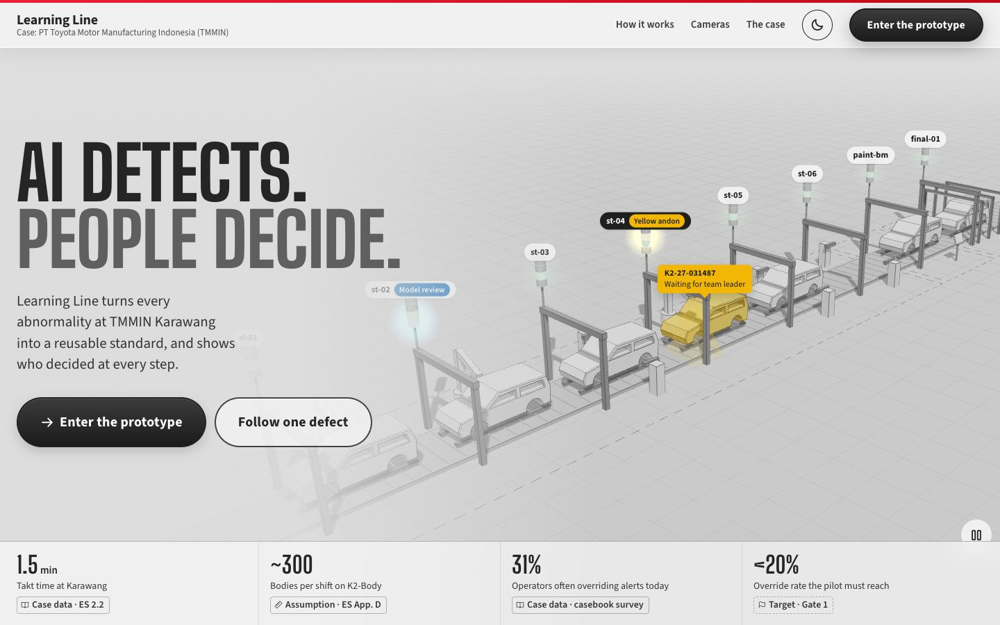
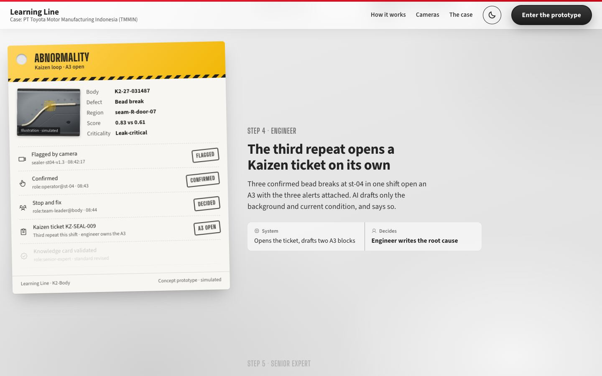
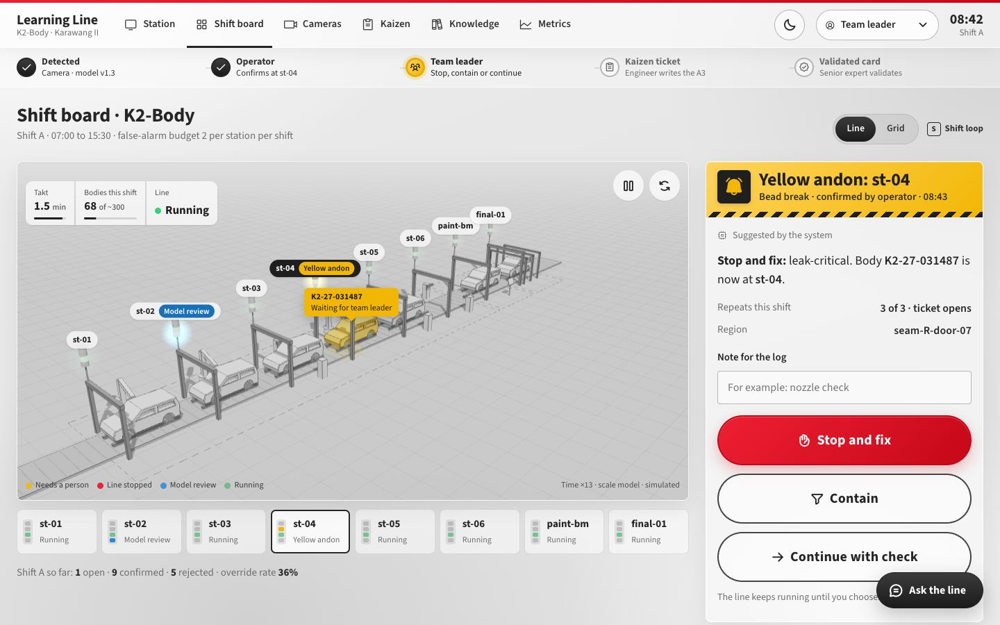
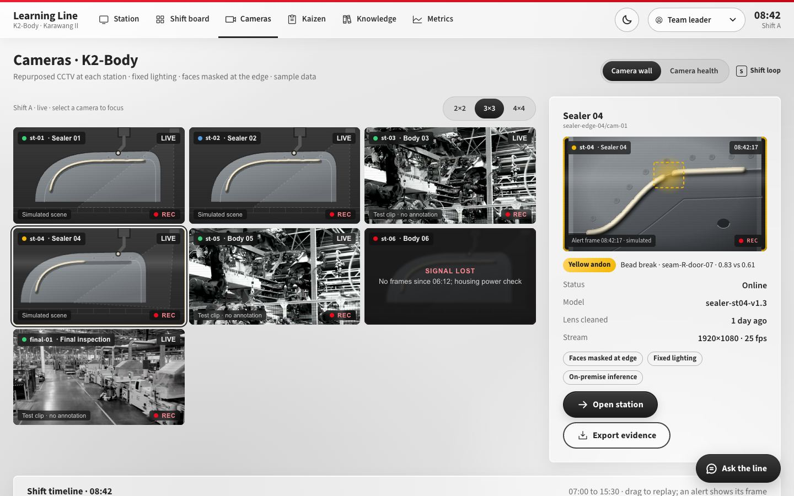
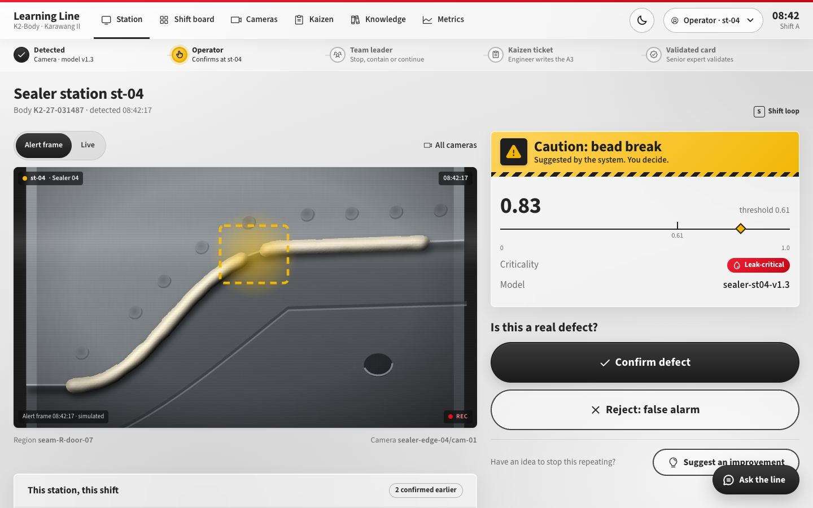
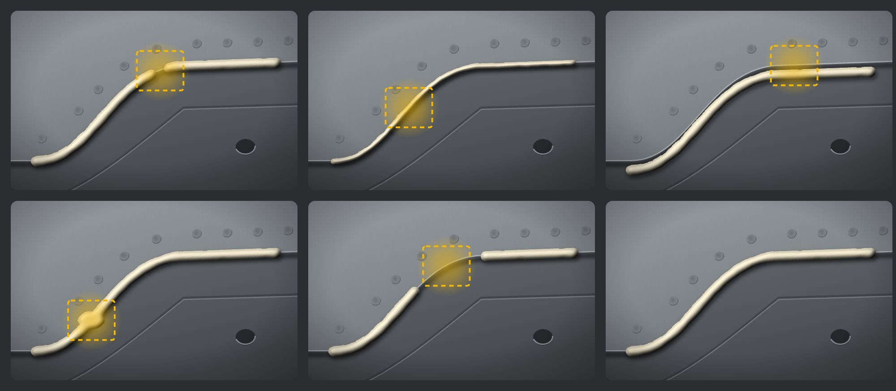
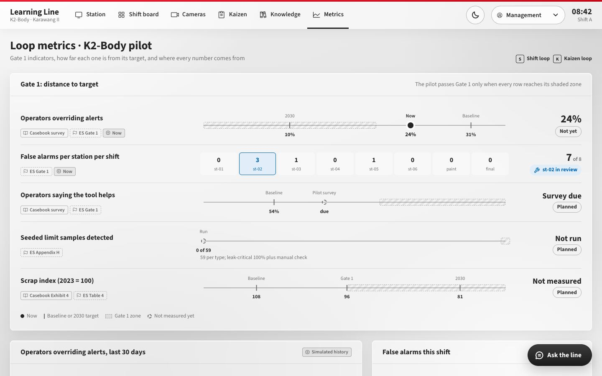
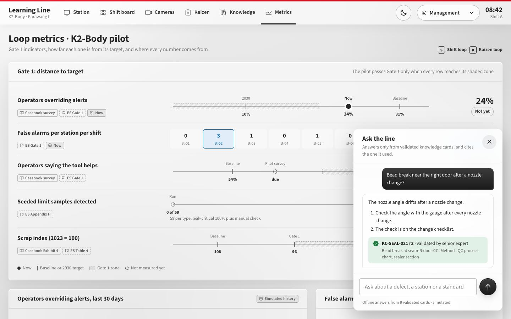

Master plan
Learning Line
Semua isi master plan dalam bentuk mockup yang bisa dibuka dan dicoba. Pilih yang disukai; setelah handoff/be-4 semua ini dipindah ke aplikasi Next. Tidak ada yang di-push.
- S1CCTV + The LineMockup selesai
- S2Landing, metrics, dock, beadMockup selesai, menunggu pilihan Dinda
- S3 · butuh BE-4Port ke app, bagian 1CCTV, The Line, Station
- S4 · butuh BE-4Port ke app, bagian 2Landing, metrics, trail, dock
- S5PengerasanHP, a11y, performa, review
- S6FINALVideo dan Appendix C
-

Landing v2: lini itu sendiri jadi hero
Video stok diganti maket 3D lini K2-Body. Andon st-04 menyala kuning dan body K2-27-031487 menunggu team leader. Strip gemba di bawah memuat takt, body per shift, override rate, dan target Gate 1, masing-masing dengan chip asal-usul.
- Medium
- Three.js (maket buatan sendiri), font display Big Shoulders
- Pembeda
- Bukan pabrik digital generik: satu abnormalitas nyata, sedang menunggu keputusan manusia
-

The Trail: satu cacat, lima pasang tangan
Kartu abnormalitas fisik (berlubang, hazard stripe) distempel ala hanko saat pembaca scroll: Flagged, Confirmed, Decided, A3 open, Validated. Di tahap 5 kartunya berubah hijau jadi "Standard". Setiap tahap memisahkan apa yang dikerjakan sistem dan siapa yang memutuskan.
- Medium
- HTML/CSS, scroll-driven, stempel beranimasi
- Dipakai lagi
- Station dan Kaizen di aplikasi (S4)
-

Shift board: The Line
Grid 8 kartu diganti lini 3D. Body bergerak sesuai takt, dan tiap stasiun punya menara andon empat warna. Klik Stop and fix: lini benar-benar berhenti, lampu jadi merah, dan hanya team leader yang bisa menyalakannya lagi. Di HP, kamera mengikuti stasiun yang dipilih.
- Medium
- Three.js, label HTML, papan gemba
- Aksesibel
- Strip stasiun untuk keyboard, tombol jeda gerak, reduced-motion
-

Cameras: CCTV yang jujur
Dinding kamera 2×2, 3×3, dan 4×4, panel fokus dengan frame alert, garis waktu shift yang bisa digeser, dan tab kesehatan kamera (uptime 14 hari, lensa, tiket maintenance). Klip asli tidak pernah diberi kotak deteksi.
- Medium
- Klip Pexels diproses ffmpeg jadi grade CCTV, adegan SVG prosedural
- Butuh BE
- getCameraView(), createCameraTicket
-

Station: dari kamera ke keputusan
Operator bisa beralih antara frame alert (beku di 08:42:17 dengan heatmap) dan Live. Ada link ke semua kamera.
- Medium
- CameraFeed yang sama dengan dinding kamera
-

Ilustrasi bead sealer, dibuat ulang
Dulu terlihat seperti jalan. Sekarang: close-up sambungan hem pintu, dua lembar baja bertumpuk dengan bayangan, titik las, garis press, dan lubang pilot. Bead PVC beige-nya doff dan membulat karena diberi filter pencahayaan. Ada enam varian: break, thin, offset, excess, missing, dan normal.
- Medium
- SVG dengan feDiffuseLighting dan feSpecularLighting: tajam di semua ukuran, ringan, tanpa foto pabrik
- Di aplikasi
- Komponen BeadIllustration.tsx milik UI, dipindah di S3 tanpa perlu BE
-

Metrics v2: angka yang jujur
Setiap indikator Gate 1 jadi lintasan dari baseline ke zona target, dengan chip Case data, Target, atau Simulated. Isinya: riwayat override 30 hari (berlabel simulasi, "not there yet"), false alarm per stasiun, Pareto st-04 dengan thumbnail bead, alur Kaizen, kartu pengetahuan, ide, dan seed fingerprint.
- Medium
- SVG buatan sendiri dengan tooltip, warna dari tema
- Dasar
- Laporan pilot data: jangan klaim hasil pilot
-

Ask the line: asisten di setiap layar
Tombol di pojok kanan bawah membuka asisten tanpa meninggalkan layar. Ia menjawab hanya dari kartu tervalidasi dan selalu mengutip ID serta revisinya. Untuk paint orange peel jawabannya: "No validated card covers this yet. I won't guess", lalu menawarkan untuk meneruskan ke engineer pemilik.
- Coba
- Buka layar mana pun kecuali Knowledge, yang sudah punya asisten bawaan